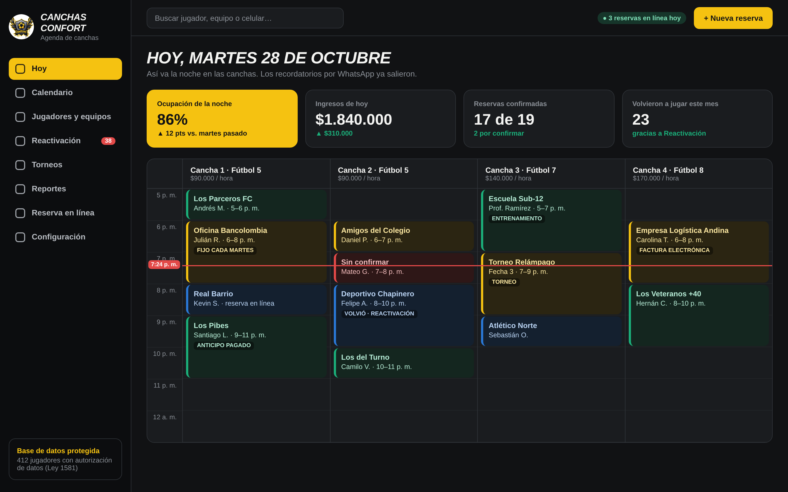
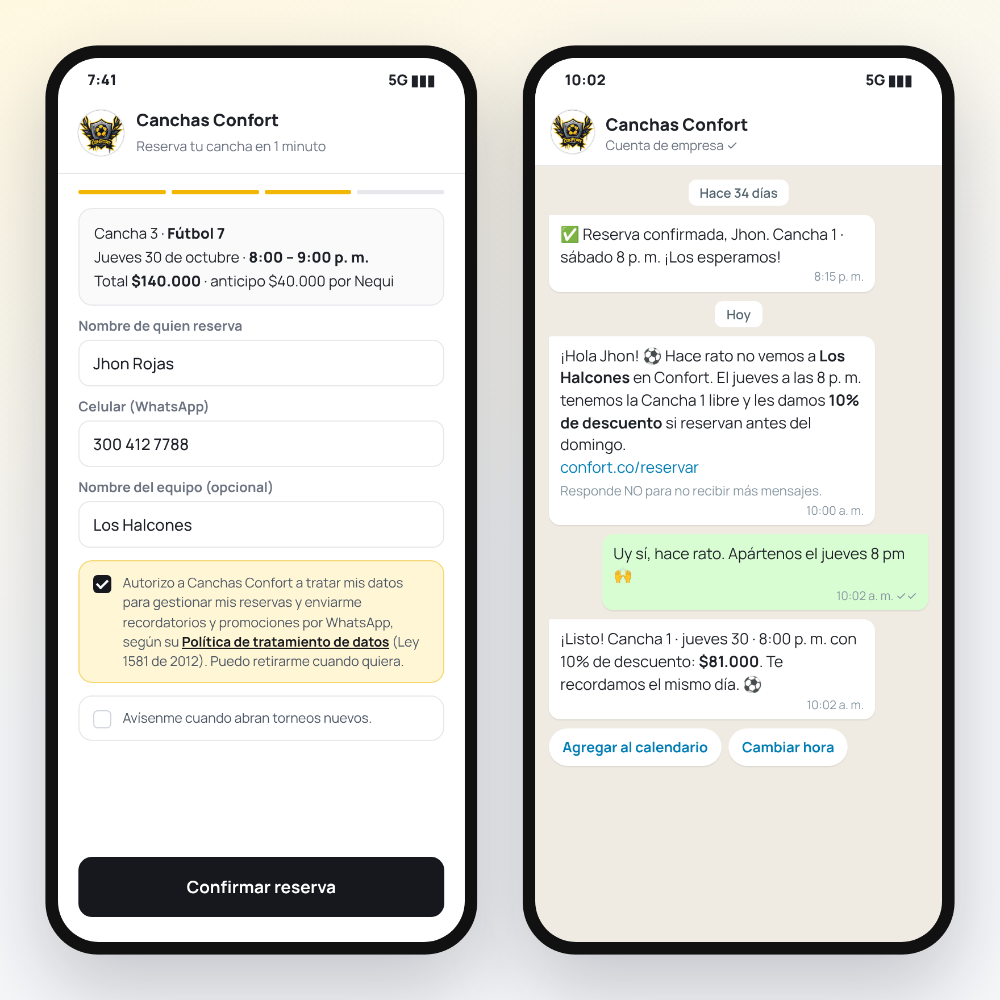
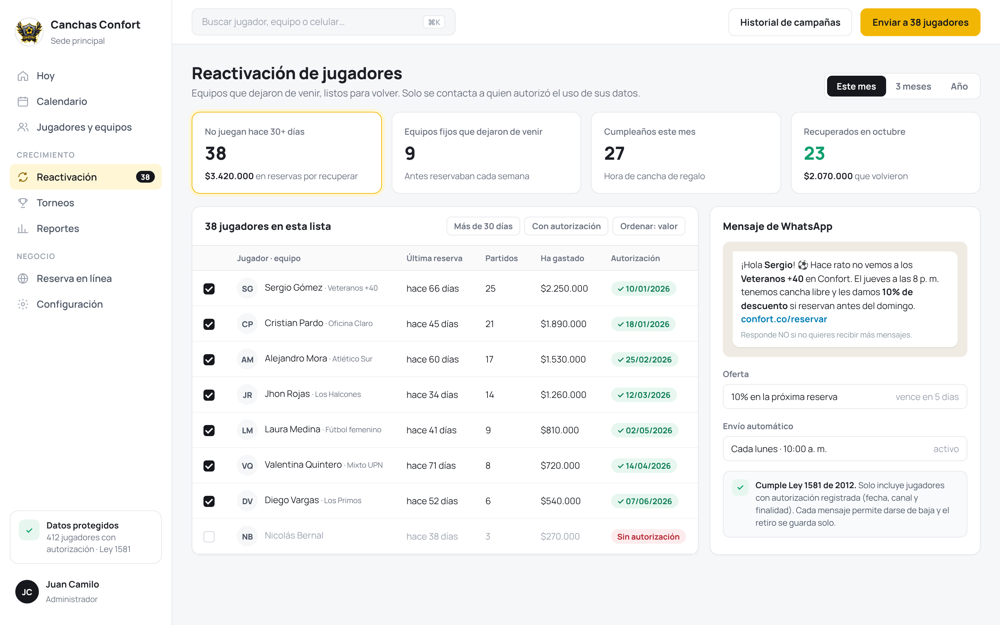
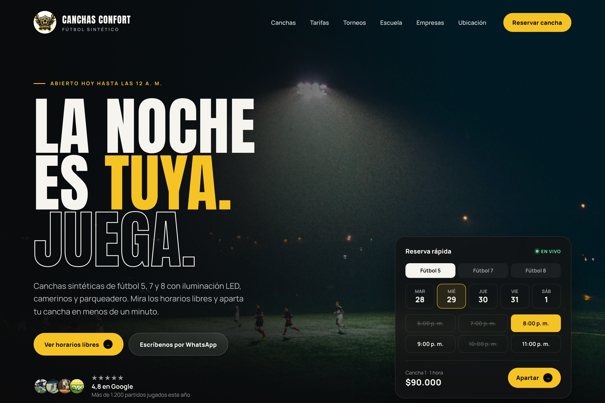
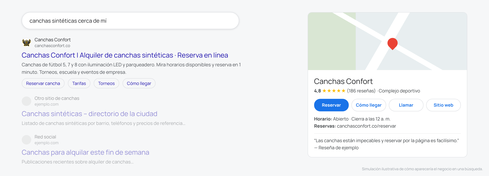

Preparada para Canchas Confort
Un sistema para que los equipos lo encuentren en Google, reserven solos en un minuto y vuelvan a jugar una y otra vez, cuidando sus datos como exige la ley.

01 · Lo que vemos hoy
En la mayoría de canchas que visitamos pasa lo mismo, y no es por falta de buen servicio.
Cada reserva es una conversación de WhatsApp. Si nadie contesta rápido, el equipo se va a otra cancha.
Un equipo deja de venir y nadie se da cuenta. Sus datos están regados en chats, sin forma de volver a invitarlo.
Quien busca "canchas sintéticas cerca de mí" encuentra a la competencia. Instagram no aparece bien en esas búsquedas.
Hacer volver a un jugador que ya conoce sus canchas es más fácil y más barato que conseguir uno nuevo. Por eso la propuesta empieza por los clientes que usted ya tiene.
02 · La idea
No le vendemos programas sueltos. Le armamos un camino completo para cada jugador: desde que lo busca en Google hasta que se vuelve cliente fijo.
Aparece en Google y Maps cuando buscan canchas en su zona, con fotos, reseñas y precios claros.
Sitio web + GoogleVen los horarios libres y apartan en un minuto, a cualquier hora. Al reservar autorizan el uso de sus datos.
Agenda en líneaRecordatorios, invitaciones a quien dejó de venir, cumpleaños y torneos, por WhatsApp y de forma automática.
Reactivación↻ Cada jugador que vuelve puede dejar una reseña en Google, y esas reseñas ayudan a que lo encuentren los siguientes equipos.
03 · Lo que incluye
El tablero del negocio. En una sola pantalla ve qué cancha está ocupada, quién viene, quién pagó el anticipo y quién falta por confirmar.

Todas las semanas el sistema revisa quién lleva más de 30 días sin jugar y le envía una invitación personal por WhatsApp para que vuelva.

La lista se ordena por historial de cada jugador, para invitar primero a los más frecuentes.
Una página profesional con su marca, pensada para verse bien en el celular y para aparecer en Google cuando buscan canchas en su zona.


Simulación ilustrativa de cómo podría verse Canchas Confort en una búsqueda local.
04 · Datos personales
Escribirle a los clientes solo funciona si se hace bien. El sistema está pensado para que Canchas Confort cumpla con la protección de datos personales (Habeas Data).
Casilla clara con enlace a la política de datos. Las promociones tienen su propia autorización.
Se guarda fecha, canal y finalidad, por si alguien la solicita.
Quien no autorizó nunca recibe mensajes; el sistema lo excluye automáticamente.
Cada mensaje permite responder "NO" y el retiro queda registrado al instante.
Incluimos la plantilla de Política de Tratamiento de Datos para Canchas Confort y el procedimiento para atender consultas, correcciones o eliminación de datos.
05 · Seguimiento
No le prometemos cifras. Le mostramos cada mes, con sus propios datos, qué está funcionando.
Reservas que llegaron en línea y a qué horas.
Jugadores invitados a volver y cuántos reservaron de nuevo.
Visitas a la página y búsquedas en Google.
Ocupación por cancha y horas que siguen vacías.
06 · Puesta en marcha
En 72 horas sus clientes ya pueden reservar en línea.